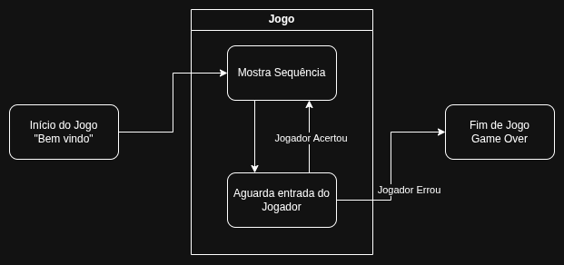
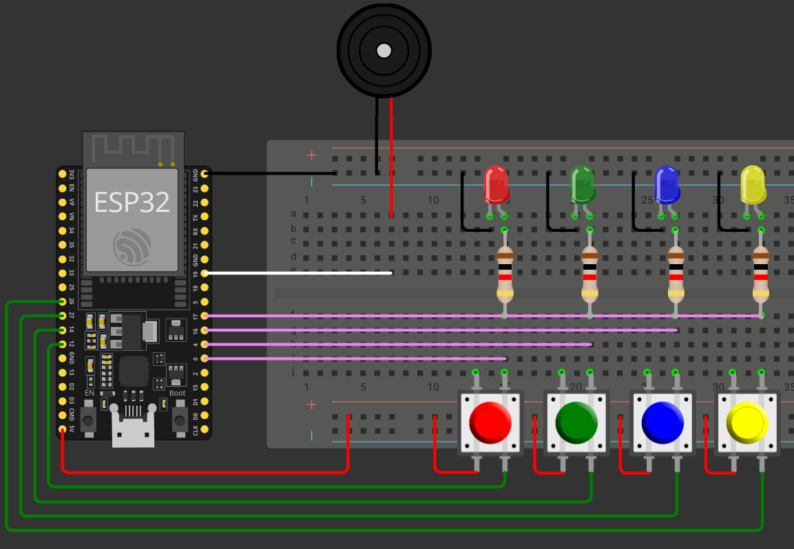

public class
Disruptive Architectures
:
Sensores, Atuadores e IO
,
Projeto: Genius
Projeto: Genius
Na aula passada, desenvolvemos a estrutura lógica inicial de um jogo de memória estilo Genius (ou Simon Says). O foco foi configurar os componentes básicos, como LEDs, botões e buzzer, além de criar a sequência aleatória de cores.
Para fazer o jogo funcionar, criamos uma maquina de estados, e então a loop apenas gerência qual estado irá executar.

Nosso diagram no Wokwi ficou assim:

e nosso código
// Definição dos pinos para os botões (Inputs)
const int inverm = 12; // Vermelho
const int inverd = 14; // Verde
const int inazul = 27; // Azul
const int inamar = 26; // Amarelo
// Definição dos pinos para os LEDs (Outputs)
const int outverm = 0;
const int outverd = 4;
const int outazul = 16;
const int outamar = 17;
const int buzzer = 19; // Pino do Buzzer
// Máquina de Estados para organizar o fluxo do jogo
typedef enum ESTADOS {
STARTUP = 0, // Sequência de início
GAME, // Jogo rodando
GAMEOVER // Fim de jogo
} estados;
estados estadoAtual; // Armazena o estado atual do programa
// Função que faz a animação inicial e toca sons ao ligar
void runStartup() {
tone(buzzer, 440, 200);
delay(200);
digitalWrite(outverm, HIGH);
tone(buzzer, 455, 200);
delay(200);
digitalWrite(outverd, HIGH);
tone(buzzer, 470, 200);
delay(200);
digitalWrite(outazul, HIGH);
tone(buzzer, 485, 200);
delay(200);
digitalWrite(outamar, HIGH);
tone(buzzer, 500, 200);
delay(200);
// Apaga tudo após a sequência
digitalWrite(outverm, LOW);
digitalWrite(outverd, LOW);
digitalWrite(outazul, LOW);
digitalWrite(outamar, LOW);
noTone(buzzer);
estadoAtual = GAME; // Muda para o estado de jogo
}
int GameState = 0; // 0: Mostra sequência / 1: Espera jogador
int cores[10] = {0,0,0,0,0,0,0,0,0,0}; // Array que guarda a sequência de cores
int nivel = 0; // Nível atual (quantas cores o jogador deve acertar)
int atual = 0; // Índice da cor que o jogador está tentando acertar agora
int keyDown = 0; // Trava lógica para evitar que um clique longo conte como vários
// Função auxiliar para ligar o LED e tocar o som correspondente a uma cor
void mostraCor(int cor) {
if(cor == 1) { // Vermelho
digitalWrite(outverm, HIGH);
tone(buzzer, 440);
}
else if(cor == 2) { // Verde
digitalWrite(outverd, HIGH);
tone(buzzer, 420);
}
else if(cor == 3) { // Azul
digitalWrite(outazul, HIGH);
tone(buzzer, 400);
}
else if(cor == 4) { // Amarelo
digitalWrite(outamar, HIGH);
tone(buzzer, 460);
}
delay(200); // Mantém ligado por 200ms
digitalWrite(outverm, LOW);
digitalWrite(outverd, LOW);
digitalWrite(outazul, LOW);
digitalWrite(outamar, LOW);
noTone(buzzer);
}
// Lê qual botão está pressionado e retorna o número da cor (1 a 4) ou 0 se nenhum
int leInput() {
if(digitalRead(inverm)) { return 1; }
if(digitalRead(inverd)) { return 2; }
if(digitalRead(inazul)) { return 3; }
if(digitalRead(inamar)) { return 4; }
return 0;
}
// Debug: imprime a sequência atual de cores no Monitor Serial
void printLevels() {
char coresAscii[] = {'_', 'R', 'G', 'B', 'Y'};
for(int i = 0; i < 10; i++) {
Serial.print(coresAscii[cores[i]]);
}
Serial.println();
}
void runGame() {
Serial.println("Running Game");
// FASE 0: O jogo mostra a sequência para o jogador
if(GameState == 0) {
cores[nivel] = random(1, 5); // Gera uma cor aleatória (1 a 4)
for(int i = 0; i <= nivel; i++) {
mostraCor(cores[i]); // Brilha os LEDs da sequência
delay(100);
}
GameState = 1; // Muda para fase de entrada do jogador
}
// FASE 1: O jogo espera o input do jogador
else {
printLevels();
if(atual <= nivel) {
int cor = leInput();
// LOGICA DE "KEY DOWN":
// Só entra aqui se um botão foi apertado (cor != 0) E se ele não estava apertado antes (keyDown == 0)
if(cor != 0 && keyDown == 0) {
keyDown = 1; // Trava: o código não processará novos cliques até soltar o botão
if(cor == cores[atual]) { // Acertou a cor da sequência?
atual++; // Vai para a próxima cor
}
else {
estadoAtual = GAMEOVER; // Errou, fim de jogo
}
}
// Se o jogador soltar o botão (leInput retorna 0), destravamos o keyDown
else if(cor == 0) {
keyDown = 0;
}
}
// Se o jogador acertou toda a sequência do nível atual
else {
GameState = 0; // Volta para mostrar a nova sequência
nivel++; // Aumenta a dificuldade
atual = 0; // Reseta o contador de acertos do nível
delay(500);
}
}
}
// Função de fim de jogo: toca som grave e pisca todos os LEDs
void runGameOver() {
tone(buzzer, 220);
for(int i = 0; i < 4; i++) {
digitalWrite(outverm, HIGH);
digitalWrite(outverd, HIGH);
digitalWrite(outazul, HIGH);
digitalWrite(outamar, HIGH);
delay(200);
digitalWrite(outverm, LOW);
digitalWrite(outverd, LOW);
digitalWrite(outazul, LOW);
digitalWrite(outamar, LOW);
delay(200);
}
noTone(buzzer);
// Aqui você poderia resetar as variáveis para reiniciar o jogo
}
void setup() {
estadoAtual = STARTUP;
Serial.begin(115200);
Serial.println("Hello, ESP32!");
// Configuração dos Pinos
pinMode(inverm, INPUT_PULLDOWN); // Garante 0V quando solto
pinMode(inverd, INPUT_PULLDOWN);
pinMode(inazul, INPUT_PULLDOWN);
pinMode(inamar, INPUT_PULLDOWN);
pinMode(outverm, OUTPUT);
pinMode(outverd, OUTPUT);
pinMode(outazul, OUTPUT);
pinMode(outamar, OUTPUT);
pinMode(buzzer, OUTPUT);
randomSeed(analogRead(0)); // Inicializa o gerador de números aleatórios
}
void loop() {
// O loop apenas gerencia em qual estado o jogo está
switch(estadoAtual) {
case STARTUP:
runStartup();
break;
case GAME:
runGame();
break;
case GAMEOVER:
runGameOver();
break;
}
}
public class
Disruptive Architectures
:
Sensores, Atuadores e IO
,
Projeto: Genius